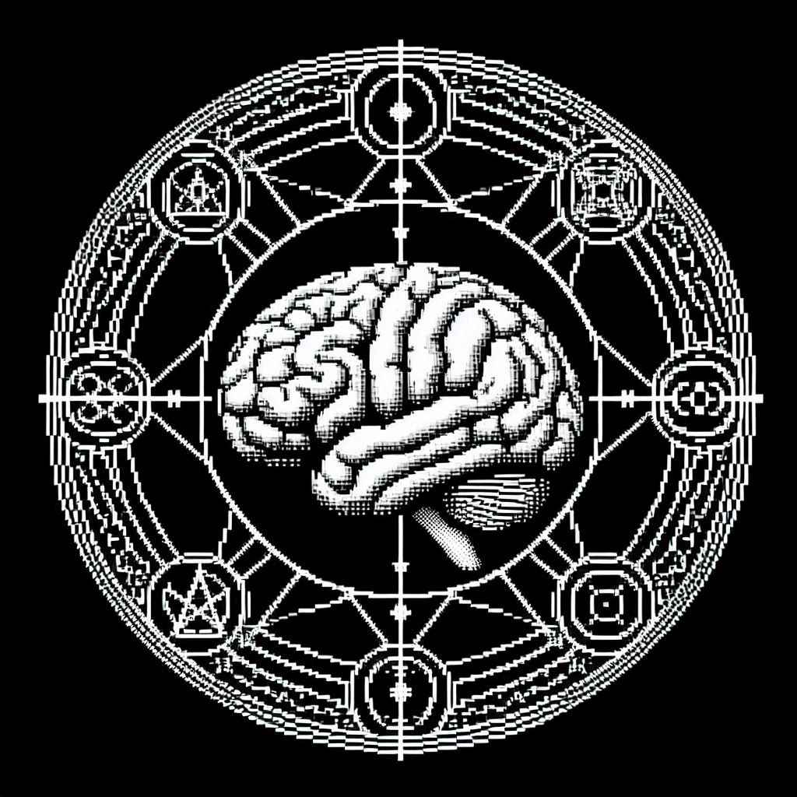

마법사는 뇌를 매개로 주문세계의 현상을 현실에 구현하며, 비밀스러운 신비 지식에 심취한 학자 또는 세상의 뒤편으로 밀려난 이교의 광신자의 계보를 잇는다.
주문 세계의 마법이 현실에 작용할 때 중계기 역할을 하는 뇌는 심각한 부하를 감당하므로, 강한 마법의 구사자는 필연적으로 크고 작은 정신질환에 시달리고 있다.
주류 학계의 분류 기준을 따른다면 현 시대의 마법사는 신비학자, 주술사, 구도자와 마술사의 네 카테고리로 나눌 수 있다.
신비학자Occultist는 근대 유럽의 상류층 문화인 신비주의 학문의 연구자를 그 뿌리로 두는 마법사를 말한다. 이들은 기독교 이단 종파의 세계관을 차용하여 주문 세계를 설명하며, 학구적 성질이 강하고 배타적인 경향을 띈다.
주술사Witch는 고대와 중세의 이교 추종자를 원류로 삼으며, 공통적인 세계관은 존재하지 않으나 주류 종교에 의해 탄압받은 역사가 있는 소규모 종교의 무속인 계급으로 이루어져 있다. 주술사 집단은 대체로 외부에 대해 확장적이고 호전적인 성향이 강하며, 공격적 주술Hex에 대한 연구에 치중하는 경향을 띈다.
구도자Seeker는 특정 철학, 또는 종교 이념을 따르되 대형 집단을 거부하고 개인의 영적 성장을 지향하는 마법사이다. 이들의 지식은 주로 사제 관계를 통해 전승되며, 주문 세계와의 감응에 대한 독립된 방법론을 가지고 있다.
마술사Magician는 특별한 신비주의 이념을 가지고 있지 않으며, 뚜렷한 계보를 따르지 않는 마법사를 일컫는다. 마술사는 사용자간 지식 수준과 주문 활용 능력의 편차가 크며, 마법사로서의 정체성이 약해 눈에 잘 띄지 않으나 적극적 외부 활동에 대한 거부감이 적고 개체수가 많기에 알려진 마법사 인구의 대부분을 차지한다.
@spellslinger55: 결론은 하나 빼면 다 사이비 믿는 정신병자들이라는 거임ㅋㅋ. 빙신들
L @RighteousFlame: 네다음 노근본 길바닥 약장수 좆거지새끼